정보보안기사 (2018-03-31 기출문제)
1과목: 시스템 보안
1. 다음 인증관리방법에 해당하는 것은?
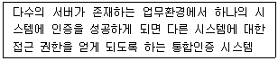
- PAM
- OTP
- 계정 접속관리(IAM 등)
- SSO
(정답률: 74%)

2. 다음 중 리눅스에서 Process ID(PID) 1번을 가지고 있는 프 로세스는 무엇인가?
- init
- 부트로더
- OS 커널
- BIOS
(정답률: 58%)
3. 사용자의 고유한 ID에 해당되는 필드는?
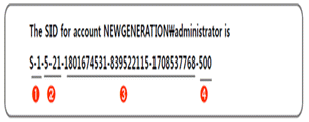
- ①번 필드
- ②번 필드
- ③번 필드
- ④번 필드
(정답률: 41%)
4. SetUID와 SetGID가 설정된 모든 파일을 찾으려는 명령어가 바르게 기술된 것은?
- find / -type f \(-perm -1000 -0 perm -2000 \) -print
- find / -type f \(-perm -2000 -0 perm -4000 \) -print
- find / -type f \(-perm -100 -0 perm -200 \) -print
- find / -type f \(-perm -200 -0 perm -400 \) -print
(정답률: 65%)
5. 다음 지문에서 설명하고 있는 보안 기술은 무엇인가?
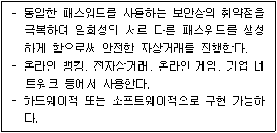
- 스마트토큰
- OTP(One-Time Pad)
- OTP(One-Time Password)
- 보안카드
(정답률: 73%)
6. 다음 지문에 ( ㉠ )에 들어갈 용어로 올바른 것은?
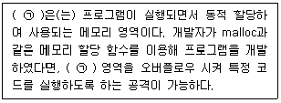
- 스택(Stack)
- 힙(Heap)
- 버퍼(Buffer)
- 스풀(Spool)
(정답률: 50%)
7. 취약점 점검용으로 사용되는 도구가 아닌것은?
- SATAN
- Nessus
- Snort
- ISS
(정답률: 40%)
8. 이메일과 관련되 프로토콜이 아닌것은?
- SMTP
- SNMP
- POP3
- IMAP
(정답률: 67%)
9. 트로이목마의 특징이 아닌 것은?
- 백도어(Back Door)로 사용할 수 있다.
- 자기복제 능력이 있다.
- 유용한 프로그램에 내장되어 배포될 수 있다.
- 정보유출이나 자료파괴 같은 피해를 입힐 수 있다.
(정답률: 66%)
10. 다음 지문은 무엇을 설명한 것인가?
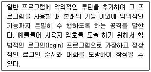
- 트로이목마(Netbus)
- 매크로 바이러스(Macro virus)
- 웜(I-Worm/Hybris)
- 악성 스크립트(mIRC)
(정답률: 39%)
11. xfile(파일)에 대한 접근권한을 숫자로 올바르게 표현한 것은?
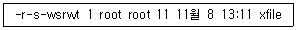
- 6426
- 7537
- 1537
- 1426
(정답률: 46%)
12. 다음 중 악성코드의 치료 방법이 다른 것은?
- 바이러스
- 웜
- 트로이목마
- 스파이웨어
(정답률: 47%)
13. 윈도우 시스템에서 사용자 계정과 패스워드 인증을 위해 서버나 도메인 컨트롤러에 증명하는 Challenge & Response 기반의 인증 프로토콜은?
- LSA
- SAM
- NTLM
- SRM
(정답률: 28%)
14. 다음 중 컴퓨터 바이러스에 대한 설명으로 옳지 않은 것은
- 부트 바이러스란 플로피디스크나 하드디스크의 부트섹터를 감염시키는 바이러스를 말한다.
- 파일 바이러스는 숙주 없이 독자적으로 자신을 복제해 다른 시스템을 자동으로 감염시켜 자료를 유출, 변조, 삭제하거나 시스템을 파괴한다.
- 이메일 또는 프로그램 등의 숙주를 통해 전염되어 자료를 변조, 삭제하거나 시스템을 파괴한다.
- 최근 들어 암호화 기법을 기반으로 구현된 코드를 감염 시마다 변화시킴으로써 특징을 찾기 어렵게 하는 다형성 (Polymorphic) 바이러스로 발전하고 있다.
(정답률: 65%)
15. 다음 중 C언어 함수 중에서 버퍼 오버플로우 취약점이 발생하지 안도록 하기 위해 권장하는 함수가 아닌 것은?
- strncat()
- strncpy()
- snprintf( )
- gets()
(정답률: 61%)
16. net 명령어에 대한 설명으로 잘못된 것은?
- net share : 서버의 모든 공유 리소스 확인 또는 제거
- net user : 서버의 사용자 계정 확인 및 관리
- net session : 서버에 현재 원격 로그인된 사용자 확인 또는 세션종료
- net computer : 서버에서 실행하고 있는 서비스 확인 또는 특정 서비스 실행
(정답률: 61%)
17. 다음 중 윈도우 운영체제에서 사용하는 파일 시스템이 아닌 것은?
- FAT16
- FAT32
- EXT3
- NTFS
(정답률: 61%)
18. 다음 중 Telnet 보안에 대한 설명 중 틀린 것은?
- TELNET 세션은 암호화 및 무결성 검사를 지원하지 않는다.
- SSH(Secure Shell)는 암호화를 하지 않는다.
- 패스워드가 암호화되어 있지 않아 스니퍼를 이용하여 제3자에게 노출 될 수 있다.
- UNIX 시스템에서 해커가 in.telnetd를 수정하여 클라이언트의 특정 터미널 종류에 대해 인증과정 없이 쉘을 부 여할 수도 있다.
(정답률: 65%)
19. 유닉스 시스템 명령어는?
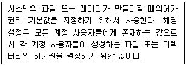
- chmod
- umask
- chown
- touch
(정답률: 51%)
20. 분석 시 사용될 수 있는 명령어에 대하여 잘못 나열한 것은?
- secure - 사용자 원격접속 정보 - text file - grep
- utmp - 현재 로그인 사용자 정보 - binary file - who
- pacct - 사용자별 명령 실행 정보 - text file - history
- wtmp - 최근 로그인 및 접속 호스트 정보 - binary file- last
(정답률: 30%)
2과목: 네트워크 보안
21. 내부 네트워크와 외부 네트워크 사이에 위치하여 외부에서의 침입을 1차로 방어해 주며 불법 사용자의 침입차단을 한 정책과 이를 지원하는 소프트웨어 및 하드웨어를 제공 는 것은?
- IDS(Intrusion Detection System)
- Firewall
- Bridge
- Gateway
(정답률: 60%)
22. VPN(Virtual Private Network)의 보안적 기술 요소와 거리 가 먼 것은?
- 터널링 기술 : 공중망에서 전용선과 같은 보안 효과를 얻기 위한 기술
- 침입탐지 기술 : 서버에 대한 침입을 판단하여 서버의 접근제어를 하는 기술
- 인증 기술 : 접속 요청자의 적합성을 판단하기 위한 인증기술
- 암호 기술 : 데이터에 대한 기밀성과 무결성을 제공하기 위해 사용되는 암호 알고리즘 적용 기술
(정답률: 47%)
23. 다음은 DOS 창에서 어떤 명령어를 실행시킨 결과인가?
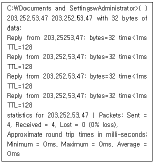
- ping
- traceroute
- date
- netstat
(정답률: 59%)
24. 다음 지문에서 설명하고 있는 침입차단시스템은?
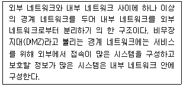
- 스크리닝 라우터(Screening Router)
- 스크린된 호스트 게이트웨이(Screened Host Gateway)
- 이중 홈 게이트웨이(Dual-homed Gateway)
- 스크린된 서브넷 게이트웨이(Screened Subnet Gateway)
(정답률: 42%)
25. 다음 중 TCP 프로토콜을 사용하여 서버와 클라이언트가 통 신을 수행할 때 서버에서 클라이언트의 접속요청을 기다리는 함수명은?
- bind()
- connect()
- listen()
- accept()
(정답률: 50%)
26. 다음 설명에 해당하는 서비스거부(DoS) 공격은?
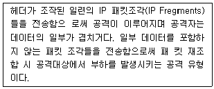
- Teardrop
- Land attack
- Syn Flooding
- Smurf attack
(정답률: 48%)
27. 다음지문에서 설명하는 침입 탐지 관련 판정은?
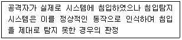
- True Positive
- False Positive
- True Negative
- False Negative
(정답률: 41%)
28. 다음 보기에서 설명하고 있는 공격에 대한 방식은?
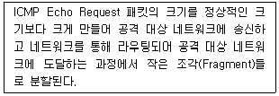
- Teardrop 공격
- Ping of Death 공격
- UDP Traffic Flooding 공격
- Tiny Fragmentation 공격
(정답률: 45%)
29. 다음 중 방화벽의 기능이 아닌 것은?
- 접근제어
- 인증
- 로깅 및 감사추적
- 침입자의 역추적
(정답률: 57%)
30. 다음 중 무선랜 구축 시 보안 고려사항으로 가장 적합하지 않은 선택은 무엇인가?
- SSID를 숨김모드로 사용
- 관리자용 초기 ID/Password 변경
- 무선 단말기의 MAC 주소 인중 수행
- 보안성이 우수한 WEP(Wired Equivalent Privacy) 사용
(정답률: 49%)
31. 다음에서 호스트기반 침입탐지시스템(HIDS : host-based IDS)에 의해서 처리되는 이상행위의 유형이 아닌 것은?
- 프로토콜 이상행위(Protocol Anomaly)
- 버퍼오버플로우 취약점 공격(Buffer Overflow Exploits)
- 권한 확대 취약점 공격(Privilege-escalation Exploits)
- 디렉터리 검색(Directory Traversal)
(정답률: 25%)
32. 지식기반 침입탐지이 아닌 것은?
- 통계적 분석(Statistical Analysis)
- 시그너처 분석(Signature Analysis)
- 페트리넷(Petri-net)
- 상태전이분석(State Transition Analysis)
(정답률: 20%)
33. 무선랜 보안에 대한 설명으로 옳지 않은 것은?
- WEP 보안프로토콜은 RC4 암호 알고리즘을 기반으로 개발되었으나 암호 알고리즘의 구조적 취약점으로 인해 공격자에 의해 암호키가 쉽게 크래킹되는 문제를 가지고 있다.
- 소규모 네트워크에서는 PSK(PreShared Key) 방식의 사용자 인증이, 대규모 네트워크인 경우에는 별도의 인증서버를 활용한 802.1x 방식의 사용자 인증이 많이 활용된다.
- WPA/WPA2 방식의 보안프로토콜은 키 도출과 관련된 파 라미터 값들이 암호화되지 않은 상태로 전달되므로 공격자 는 해당 피라미터 값들을 스니핑한 후 사전공격(Dictionary attack)을 시도하여 암호키를 크래킹할 수 있다.
- 현재 가장 많이 사용 중인 암호 프로토콜은 CCMP TKIP이며 이 중 여러 개의 암호키를 사용하는 'TKIP역 보안성이 더욱 우수하며 사용이 권장되고 있다.
(정답률: 36%)
34. IPSec 보안 프로토콜에서 메시지 출처 인증, 메시지 무결성, 메시지 기밀성 서비스를 지원하는 프로토콜과 새로운 IP 헤 더가 추가되는 동작모드가 잘 묶여진 것은?
- ESP 프로토콜, Transport 동작모드
- ESP 프로토콜, Tunnel 동작모드
- AH 프로토콜, Transport 동작모드
- AH 프로토콜, Tunnel 동작모드
(정답률: 39%)
35. 다음 지문이 설명하고 있는 것은?
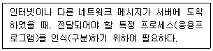
- IP 주소
- 포트번호
- LAN 주소
- MAC 주소
(정답률: 46%)
36. NAC의 주요기능과 가장 거리가 먼 것은?
- 접근제어/인증 : 네트워크의 모든 IP기반 장치 접근제어
- PC 및 네트워크 장치 통제 : 백신 및 패치 관리
- 해킹/Worm/유해 트래픽 탐지 및 차단 : 해킹행위 차단 및 완벽한 증거수집 능력
- 컴플라이언스 : 내부직원 역할기반 접근제어
(정답률: 36%)
37. Enterprise Security Management의 구성요소에 대한 설명 으로 옳지 않은 것은?
- 에이전트 : 보안 장비에 탑재, 수집된 데이터를 매니저 서버에 전달하고 통제를 받음.
- 매니저 : 에이전트에서 받은 이벤트를 룰에 의해 분석 저장, Console Part에 그 내용을 인공 지능적으로 통보
- 콘솔 : 매니저에게 받은 데이터의 시각적 전달, 상황 판단 기능
- 보안 패치 : 다른 환경을 가진 컴퓨터를 대상으로 중앙에서 자동으로 통제 및 제어함으로써 각종 소프트웨어의 취 약점에 대한 보안 사고를 사전에 예방
(정답률: 41%)
38. 다음 중 제시된 Well Known Port 번호에 해당하는 프로토 콜을 순서대로 가장 적합하게 제시한 것은?
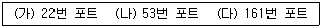
- (가) SSH, (나) Gopher, (다) NetBIOS
- (가) SSH, (나) DNS, (다) SNMP
- (가) FTP, (나) Gopher, (다) SNMP
- (가) FTP, (나) DNS, (다) NetBIOS
(정답률: 57%)
39. 어떤 프로토콜에 대한 DoS 공격인가?
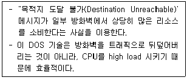
- ICMP
- HTTP
- TCP
- SMTP
(정답률: 60%)
40. DoS 공격 중 Land 공격이 조작하는 IP 프로토콜의 필드에 해당하는 것은 무엇인가?
- 출발지 주소
- 목적지 주소
- Time-To-Live 값
- 헤더의 길이
(정답률: 33%)
3과목: 어플리케이션 보안
41. 포맷스트링 취약점의 직접적인 위험이 아닌 것은?
- 프로그램의 복제
- 프로그램의 파괴
- 프로세스 메모리 보기
- 임의의 메모리 덮어쓰기
(정답률: 28%)
42. 웹 공격 기법은?
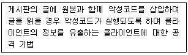
- SQL Injection 공격
- 부적절한 파라미터 조작 공격
- 버퍼 오버플로우 공격
- XSS(Cross Site Scripting) 공격
(정답률: 58%)
43. 아래 그림은 웹 해킹과 관련된 로그이다. 이 그림을 보고 짐작할 수 있는 웹 공격 기법은?
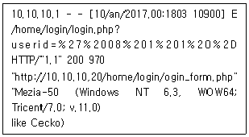
- SQL Injection
- Cross Site Request Forgery
- Distribute Denial of Service
- Cross Site Script
(정답률: 43%)
44. FTP 전송모드에 대한 설명으로 옳은 것은?
- 디폴트는 active 모드이며, passive 모드로의 변경은 FTP 서버가 결정한다.
- 디폴트는 active 모드이며, passive 모드로의 변경은 FTP 클라이언트가 결정한다.
- 디폴트는 passive 모드이며, active 모드로의 변경은 FTP 서버가 결정한다.
- 디폴트는 passive 모드이며, active 모드로의 변경은 FTP 클라이언트가 결정한다.
(정답률: 46%)
45. 어떤 종류의 취약점에 대응하기 위한 대책인가?
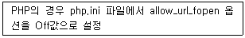
- 부적절한 파라미터 조작
- 원격지 파일의 명령 실행
- SQL Injection
- 쿠키 세션 위조
(정답률: 36%)
46. 다음 지문의 설명은 FTP의 어떤 공격 유형에 속하는가?
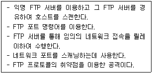
- Bounce 공격
- Anonymous FTP 공격
- TFTP 공격
- 스니핑 공격
(정답률: 27%)
47. 다음에서 설명하는 전자우편의 보안요소로 옳은 것은?
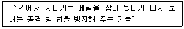
- 메시지 무결성(Message Integrity)
- 메시지 재생 방지(Message replay prevention)
- 사용자 인증(User Authentication)
- 송신자 부인 방지(Nonrepudiation of Origin)
(정답률: 45%)
48. 다음 중 스팸 필터 솔루션에 대한 설명 중 가장 부적절한 것은?
- 메일 서버 앞단에 위치하며 프락시 메일 서버로 동작한다.
- SMTP 프로토콜을 이용한 DoS 공격이나 폭탄 메일, 스팸메일을 차단한다.
- 메일헤더 및 제목 필터링은 제공하지만 본문에 대한 필터링은 제공하지 못한다.
- 첨부파일 필터링 기능을 이용하여 특정 확장자를 가진 파일만 전송되도록 설정할 수 있다.
(정답률: 48%)
49. 다음 중 PGP(pretty good privacy)의 기능이 아닌 것은?
- 전자서명
- 기밀성
- 단편화와 재조립
- 송수신 부인방지
(정답률: 29%)
50. 다음 중 E-mail 전송 시 보안성을 제공하기 위한 보안 전자 우편 시스템이 아닌 것은?
- PGP(Pretty Good Privacy)
- S/MIME(Secure Multipurpose Internet Mail Extension)
- PEM(Privacy Enhanced Mail)
- SSL(Secure Socket Layer)
(정답률: 56%)
51. 다음 중 FTP 보안대책과 가장 거리가 먼 것은?
- anonymous 사용자의 루트 디렉터리, bin, etc, pub 디렉터리의 소유자와 permission 관리
- root 계정의 ftp 접속 제한
- 최신 ftp 서버 프로그램 사용 및 주기적인 패치
- ftp 접근제어 설정 파일인 ftpusers 파일의 소유자를 root로 하고, 접근 허용할 계정을 등록
(정답률: 34%)
52. 다음의 지문에서 설명하고 있는 기술들은 전자상거래의 안 전성을 지원할 목적으로 이용되는 보안 프로토콜이다. 빈 칸 에 들어가야 할 적합한 단어는?
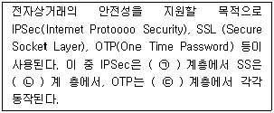
- ㉠네트워크, ㉡ 전송, ㉢ 응용
- ㉠네트워크, ㉡ 응용, ㉢ 전송
- ㉠ 응용, ㉡ 네트워크, ㉢ 전송
- ㉠ 응용, ㉡ 응용, ㉢ 전송
(정답률: 58%)
53. 다음 지문이 설명한는 기술의 명칭은?
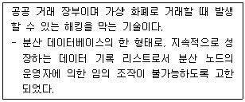
- 블록체인
- 라이트닝 네트워크
- ECDSA
- 인공지능
(정답률: 60%)
54. 다음 지문이 설명하고 있는것은?
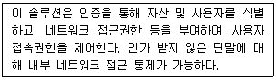
- IPS
- Firewall
- NAC
- ESM
(정답률: 53%)
55. DNSSEC에 대한 설명 중 가장 적절하지 않은 것은?
- DNS 메시지에 대한 기밀성을 제공한다.
- 서비스 거부 공격에 대한 방지책은 없다.
- DNS 데이터 위·변조 공격에 대응할 수 있다.
- 메시지 송신자 인증과 전자서명을 제공한다.
(정답률: 11%)
56. SSL 프로토콜에 대한 설명이다. 적절치 못한 것은?
- SSL을 사용하기 위해서는 URL에 "http:// 대신에 "https://"을 사용한다.
- SSL 프로토콜은 Default로 TCP 443 Port를 사용한다.
- SSL 프로토콜은 암호화 통신을 하기 때문에 침입탐지 방지시스템(IDS/ITS) 등의 보안장비에서 공격 페이로드의 탐지가 쉽다.
- SSL은 Record Layer와 HandShake Layer로 구분한다.
(정답률: 46%)
57. 다음 중 OWASP TOP 10 2017에서 새로 선정된 보안취약 점은?
- 인젝션
- 인증 취약점
- 크로스사이트 스크립트
- XXE
(정답률: 36%)
58. BYOD 보안솔루션과 가장 거리가 먼 것은?
- NAC
- MDM
- MAM
- ESM
(정답률: 22%)
59. 다음 보기가 설명하고 있는 공격 방식은?
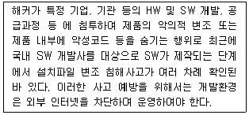
- developer chain attack
- supply chain attack
- stuxnet attack
- scada attck
(정답률: 47%)
60. 다음의 설명 및 조치 내용에 해당하는 취약점은?
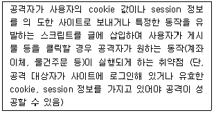
- SQL injection(sql 명령어 삽입)
- CSRF(크로스사이트 요청변조)
- RFI(원격 파일 포함)
- Directory Listing(디렉터리 목록 노출)
(정답률: 57%)
4과목: 정보 보안 일반
61. MAC 정책의 특징에 대한 설명으로 가장 부적절한 것은?
- 객체의 소유주가 주체와 객체간의 접근 통제 관계를 정의
- 보안관리자 주도 하에 중앙 집중적 관리가 가능
- 접근 규칙수가 적어 통제가 용이
- 사용자와 데이터는 보안 취급허가를 부여 받아 적용
(정답률: 41%)
62. 다음의 지문이 설명하고 있는 접근 통제 보안모델은?
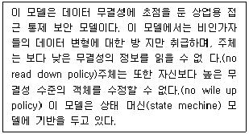
- Bell-LaPadula Model
- Biba Model
- Clark-Wilson Model
- Lattice Model
(정답률: 37%)
63. Kerberos 프로토콜을 개발함에 있어 요구사항으로 고려 지 않은 특성은?
- 보안성
- 재사용성
- 투명성
- 확장성
(정답률: 37%)
64. 다음 중 평문과 같은 길이의 키를 생성하여 평문과 키를 비 트단위로 XOR하여 암호문을 얻는 방법에 해당하는 것은?
- 스트림 암호
- 대칭키 암호
- 공개키 암호
- 블록 암호
(정답률: 38%)
65. 다음 각 지문은 공개키 암호에서 어떠한 보안기능을 제공하 기 위한 것인가?
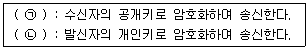
- ㉠ 비밀성, ㉡ 부인방지
- ㉠ 무결성, ㉡ 비밀성
- ㉠ 부인방지, ㉡ 무결성
- ㉠ 가용성, ㉡ 비밀성
(정답률: 39%)
66. 다음은 CRL 개체 확장자를 구성하는 필드에 대한 설명이다. 잘못된 설명은?
- Reason Code : 인증서가 갱신된 이유를 나타내기 위해 사용되는 코드
- Hold Instruction Code : 인증서의 일시적인 유보를 지원하기 위해 사용되는 코드
- Certificate Issuer : 인증서 발행자의 이름
- Invalidity Date : 개인키 손상이 발생하는 등의 이유로 인증서가 유효하지 않게 된 날짜와 시간에 대한 값
(정답률: 18%)
67. 다음은 각 암호 알고리즘이 개발된 배경을 설명한 것이다. 틀린 것은?
- 스트림 암호는 One Time Pad를 실용적으로 구현할 목적으로 개발되었다.
- 블록 암호는 암호문의 위·변조를 막기 위해서 개발되었다.
- 공개키 암호는 키 관리 문제를 극복하기 위해 개발되었다.
- 해시 함수는 디지털 서명을 효과적으로 수행하기 위해 개발되었다.
(정답률: 33%)
68. 대칭키 암호화 알고리즘으로 묶여진 것은?
- DES, AES, MAC
- RC5, AES, OFB
- SEED, DES, IDEA
- Rabin, ECDSA, ARIA
(정답률: 47%)
69. 다음 중 대칭키 배송 문제를 해결할 수 있는 방법에 해당하 지 않는 것은?
- 키 배포 센터에 의한 해결
- Diffie-Hellman 키 교환 방법에 의한 해결
- 전자서명에 의한 해결
- 공개키 암호에 의한 해결
(정답률: 43%)
70. 해시함수의 요구사항과 가장 거리가 먼 것은?
- 계산용이성
- 역방향성
- 약한 충돌회피성
- 강한 충돌회피성
(정답률: 36%)
71. 다음 중 생체 인식의 요구사항과 가장 거리가 먼 것은?
- 획득성
- 영구성
- 구별성
- 유연성
(정답률: 42%)
72. 능동적 공격에 해당되지 않는 것은?
- 메시지 변조
- 전송되는 파일을 도청
- 삽입공격
- 삭제공격
(정답률: 57%)
73. 다음의 공개키 암호에 대한 내용 중 잘못된 것은?
- 하나의 알고리즘으로 암호와 복호를 위한 키 쌍을 이용해 암호화와 복호화를 수행한다.
- 송신자와 수신자는 대응되는 키 쌍을 모두 알고 있어야 한다.
- 두 개의 키 중 하나는 비밀로 유지되어야 한다.
- 암호화 알고리즘, 하나의 키와 암호문에 대한 지식이 있어도 다른 하나의 키를 결정하지 못해야 한다.
(정답률: 40%)
74. 블록암호에 대한 공격 방식과 가장 거리가 먼 것은?
- 선형공격
- 차분공격
- 고정점 연쇄공격
- 전수공격
(정답률: 46%)
75. 인수 분해의 어려움을 기초로 한 공개키 암호화 알고리즘은?
- AES
- RSA
- ECC
- DH
(정답률: 52%)
76. 블록 암호는 기밀성이 요구되는 정보를 정해진 블록 단위로 암호화 하는 대칭키 암호 시스템으로 알고리즘 구조는 파이 스텔(Feistel) 구조와 SPN 구조가 있다. 다음 중 파이스텔 구 조 블록암호가 아닌 것은?
- DES
- AES
- SEED
- RC5
(정답률: 39%)
77. 다음 인증 기술 중에서 종류가 다른 한 가지는?
- 개체 인증
- 사용자 인증
- 신원 인증
- 메시지 인증
(정답률: 49%)
78. 이중서명의 특징에 대한 설명으로 옳지 않은 것은?
- 분쟁에 대한 대비를 위해 두 메시지 간의 연관성이 구현되어야 함
- 구매자의 자세한 주문정보와 지불정보를 판매자와 금융기관에 필요 이상으로 전달하지 않아야 함
- 이중 서명은 SSL에서 도입된 기술로 고객의 카드 정보를 상인에게 전달하면 상인은 그 요청에 유효성을 확인하게 됨
- 구매자는 최종 메시지 다이제스트를 자신의 개인 서명키로 암호화 하여 이중서명을 생성함
(정답률: 39%)
79. 인증서 상태를 관리하고 있는 서버는 유효성 여부에 관하 이 답을 즉시 보내주는 프로토콜은?
- CRL
- OCSP
- OCRL
- SSL
(정답률: 40%)
80. 그림은 사용자 A가 사용자 B에게 암호문을 전달하는 과정 이다. Key_x와 Key_y가 동일하다면 이에 대한 설명으로 옮 지 않은 것은?
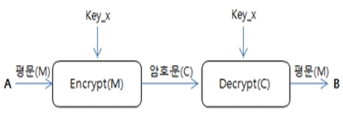
- n명의 사용자가 암호화 시스템에 참여하는 경우 n(n-1)/2)개의 키가 필요하다.
- 암호화 시스템 사용자가 1명씩 증가할 때마다 키의 개수는 기하급수적으로 증가한다.
- 동일한 키를 사용함으로써 비밀성 및 부인방지의 기능을 제공한다.
- Decrypt(C)의 알고리즘은 Encrypt(M) 알고리즘의 역순이다.
(정답률: 39%)
5과목: 정보보안 관리 및 법규
81. 정보통신망법에 따라 정보통신서비스 제공자 등은 중요 정보에 대해서는 안전한 암호알고리즘으로 암호화하여 저장하여야 한다. 다음중 법령에 따른 필수 암호화 저장 대상이 아닌것은?
- 주민등록번호
- 운전면허번호
- 핸드폰번호
- 계좌번호
(정답률: 40%)
82. 「개인정보 보호법 상 용어 정의로 가장 옳지 않은 것은?
- 개인정보: 살아 있는 개인에 관한 정보로서 성명, 주민등록번호 및 영상 등을 통하여 개인을 알아볼 수 있는 정보
- 정보주체: 처리되는 정보에 의하여 알아볼 수 있는 사람으로서 그 정보의 주체가 되는 사람
- 처리: 개인정보의 수집, 생성, 연계, 연동, 기록, 저장, 보유, 가공, 편집, 검색, 출력, 정정, 복구, 이용, 제공, 공개, 파기(破棄), 그 밖에 이와 유사한 행위
- 개인정보관리자: 업무를 목적으로 개인정보파일을 운용하기 위하여 스스로 또는 다른 사람을 통하여 개인정보를 처리하는 공공기관, 법인, 단체 및 개인
(정답률: 36%)
83. 다음 중 빈 칸에 들어갈 용어의 순서가 가장 적합한 것은?
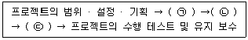
- ㉠ 복구계획 수립, ㉡ 복구전략 개발, ㉢ 사업영향평가
- ㉠ 복구전략 개발, ㉡ 복구계획 수립, ㉢ 사업영향평가
- ㉠ 사업영향평가, ㉡ 복구계획 수립, ㉢ 복구전략 개발
- ㉠ 사업영향평가, ㉡ 복구전략 개발, ㉢ 복구계획 수립
(정답률: 15%)
84. 정보보호 관리체계 인증제도에 대한 설명으로 가장 적절하지 않은 것은?
- 인증대상은 임의신청자와 의무대상자로 구분되며, 인공의무대상자가 인증을 받지 않으면 과태료 3천만원이 부과된다.
- 임의신청자의 경우 인증범위를 신청기관이 정하여 신청할 수 있으며, 심사기준 및 심사절차는 의무대상자 심사와 동일하다.
- 정보통신망법 제46조에 따른 집적정보통신시설 사업자는 의무대상자이다.
- 전년도 직전 3개월간 정보통신서비스 일일평균 이용자 수가 10만명 이상인 자는 대상이다.
(정답률: 35%)
85. OECD 개인정보보안 8원칙에 포함되지 않는 것은 무엇인가?
- 이용제한의 원칙
- 정보 정확성의 원칙
- 비공개의 원칙
- 안전성 확보의 원칙
(정답률: 34%)
86. 다음 지문이 설명하는 정보보호 관련 제도는?
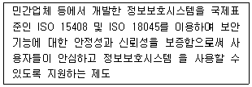
- 정보보호제품 평가 · 인증 제도
- 정보보호 관리체계 인증 제도
- 보안적합성 검증 제도
- 암호모들 검증 제도
(정답률: 31%)
87. 개인정보보호법 제3조(개인정보 보호 원칙)에 대한 내용 중 틀린 것은?
- 개인정보처리자는 개인정보의 처리 목적을 명확하게 하여야 하고 그 목적에 필요한 범위에서 최소한의 개인정보만을 적법하고 정당하게 수집하여야 한다.
- 개인정보처리자는 개인정보의 처리 목적에 필요한 범위에서 적합하게 개인정보를 처리하여야 하며, 그 목적 외의 용도로 활용하여서는 아니 된다.
- 개인정보처리자는 개인정보의 처리 목적에 필요한 범위에서 개인정보의 기밀성, 무결성 및 신뢰성이 보장되도록 하여야 한다.
- 개인정보처리자는 개인정보의 처리 방법 및 종류 등에 따라 정보주체의 권리가 침해받을 가능성과 그 위험 정도를 고려하여 개인정보를 안전하게 관리하여야 한다.
(정답률: 32%)
88. 다음은 개인정보의 안전성 확보조치 기준에서의 인터넷 홈 페이지 취약점 점검과 관련한 설명이다. 옳은 것들을 모두 고른 것은?
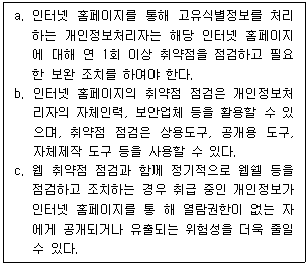
- a, b
- b, c
- a, c
- a, b, c
(정답률: 33%)
89. 위험관리 절차를 순서대로 배열한 것은?
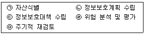
- ㉠ - ㉡ - ㉢ - ㉣ - ㉤
- ㉠ - ㉣ - ㉢ - ㉡ - ㉤
- ㉠ - ㉡ - ㉣ - ㉢ - ㉤
- ㉠ - ㉣ - ㉡ - ㉢ - ㉤
(정답률: 14%)
90. 「개인정보 보호법」에서 규정하고 있는 개인정보 중 민감정 보에 해당하지 않는 것은?
- 주민등록번호
- 노동조합 · 정당의 가입·탈퇴에 관한 정보
- 건강에 관한 정보
- 사상 · 신념에 관한 정보
(정답률: 31%)
91. 현재 존재하는 위험이 조직에서 수용할 수 있는 수준을 넘어 선다면, 이 위험을 어떤 방식으로든 처리해야 된다. 다음의 지문이 설명하고 있는 위험 처리 방식은?
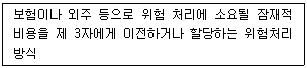
- 위험 수용
- 위험 감소
- 위험 회피
- 위험 전가
(정답률: 49%)
92. 다음의 보기에서 정보통신기반보호법에서 규정된 주요정보 통신기반시설 지정 시 고려사항이 아닌 것은?
- 당해 정보통신기반시설을 관리하는 기관이 수행하는 업무의 국가사회적 중요성
- 다른 정보통신기반시설과의 상호연계성
- 침해사고의 발생가능성 또는 그 복구의 용이성
- 시설이 취급하고 있는 개인정보의 규모
(정답률: 27%)
93. 다음은 개인정보보호법에 따른 개인정보의 파기에 관하여 설명한 것이다. 옳은 것은?
- 개인정보처리자는 처리 목적의 달성여부와 관계없이 동의 기간이 경과해야만 개인정보를 파기할 수 있다.
- 개인정보처리자는 동의기간이 경과하더라도 처리목적이 달성되지 못한 경우에는 개인정보를 계속 이용할 수 있다.
- 개인정보처리자는 개인정보를 파기해야 하는 사유가 발생했을 때에는 정당한 사유가 없는 한 5일 이내에 개인정보를 파기해야 한다.
- 복원이 불가능한 방법이란 미래에 개발될 기술도 고려하여 파기 후 개인정보의 복구 가능성을 원천 차단한 방법을 의미한다.
(정답률: 34%)
94. 개인정보처리자가 개인정보의 수집 시 정보주체의 동의를 받지 않아도 되는 경우로 가장 적절한 것은?
- 개인정보취급 방침에 명시한 경우
- 경제적, 기술적인 사유로 통상적인 동의를 받는 것이 뚜렷하게 곤란한 경우
- 법률에 특별한 규정이 있거나 법령상 의무를 준수하기 위하여 불가피한 경우
- 요금 부과를 위해 필요한 경우
(정답률: 48%)
95. 다음 보기가 설명하는 위험분석 방법은?
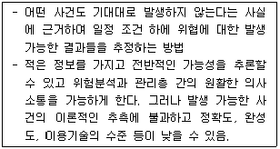
- 과거자료 분석법
- 확률 분포법
- 델파이법
- 시나리오법
(정답률: 44%)
96. 다음 지문은 정보통신망법상 전자문서의 정의 규정이다. ( )에 적합한 용어를 찾으시오.
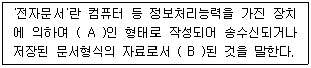
- A : 전기적, B: 정형화
- A : 전자적, B: 표준화
- A : 전기적, B : 표준화
- A : 전자적, B: 정형화
(정답률: 40%)
97. 다음은 정보보호 정책 및 조직과 관련한 설명이다. 옳지 않 은 것은?
- 조직이 수행하는 모든 정보보호 활동의 근거를 포함할 수 있도록 정보보호정책을 수립해야 하며, 이러한 정책은 조직과 관련한 것이므로 국가나 관련 산업에서 정하는 정보보호 관련 법, 규제를 고려할 필요는 없다.
- 조직에 미치는 영향을 고려하여 중요한 업무, 서비스, 조직, 자산 등을 포함할 수 있도록 정보보호 관리체계 범위를 설정하고 범위 내 모든 자산을 식별하여 문서화하여야 한다.
- 정보보호 관리체계 수립 및 운영 등 조직이 수행하는 정보보호 활동 전반에 경영진의 참여가 이루어질 수 있도록 보고 및 의사결정 체계를 수립해야 한다.
- 최고경영자는 조직의 규모, 업무 중요도 분석을 통해 정보보호 관리체계의 지속적인 운영이 가능하도록 정보보호 조직을 구성하고 정보보호 관리체계 운영 활동을 수행하는데 필요한 자원을 확보하여야 한다.
(정답률: 51%)
98. 다음은 정보보호 교육과 관련한 설명이다. 옳지 않은 것은?
- 교육의 시기, 기간, 대상, 내용, 방법 등의 내용이 포함된 연간 정보보호 교육 계획을 수립하면서, 대상에는 정보보 호 관리체계 범위 내 임직원을 포함시켜야 하고, 외부용역 인력은 제외해도 무방하다.
- 교육에는 정보보호 및 정보보호 관리 체계 개요, 보안사고 사례, 내부 규정 및 절차, 법적 책임 등의 내용을 포함 하고 일반 임직원, 책임자, IT 및 정보보호 담당자 등 각 직무별 전문성 제고에 적합한 교육내용 및 방법을 정하여야 한다.
- 연 1회 이상 교육을 시행하고 정보보호 정책 및 절차의 중 대한 변경, 조직 내·외부 보안사고 발생, 관련 법규 변경 등의 사유가 발생할 경우 추가 교육을 수행해야 한다.
- 교육 내용에는 구성원들이 무엇을 해야 하며, 어떻게 할 수 있는지에 대한 것을 포함해야 하며, 가장 기본적인 보안 단계의 실행에서부터 좀 더 고급의 전문화된 기술에 이르기까지 다양한 단계로 나누어 구성할 수 있다.
(정답률: 50%)
99. 다음 중 ISMS(Information Security Management System) 의 각 단계에 대한 설명으로 옳은 것은?
- 계획 : ISMS 모니터링과 검토
- 조치 : ISMS 관리와 개선
- 수행 : ISMS 수립
- 점검 : ISMS 구현과 운영
(정답률: 38%)
100. 국가안전보장에 중대한 영향을 미치는 주요정보통신기반시설에 대한 보호대책의 미흡으로 국가안전보장이나 경제사회 전반에 피해가 우려될 수 있으므로 기반시설을 지정하여야 한다. 다음 중 주요정보통신기반시설이 아닌 것은 무엇인가?
- 전력, 가스, 석유 등 에너지 · 수자원시설
- 인터넷포털, 전자상거래 등 인터넷시설
- 도로·철도·지하철·공항·항만 등 주요 교통시설
- 방송중계 국가지도통신망 시설
(정답률: 43%)